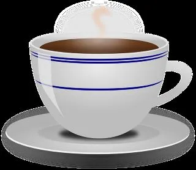

Cafe & Bar 21 was opened on the 21st of April 2012 and is situated right in the centrum of Rovaniemi, on Rovakatu 21, the address being the origin of the name Cafe & Bar 21.
Cafe & Bar 21 has the same owners than Kitchen & Bar, which was nominated in 2021 the 15th best restaurant in Finland.
and Mexican restaurant YUCA, which is located next to 21 and said to be the best Mexican restaurant in Finland.
Our newest restaurant is Alfred Kitchen & Bar, which is located in the city of Oulu!
Cafe & Bar 21 is best known for it's famous waffles, salad bowls, hand made ice creams and pastries. We welcome you to take a break and enjoy in our relaxed atmosphere!